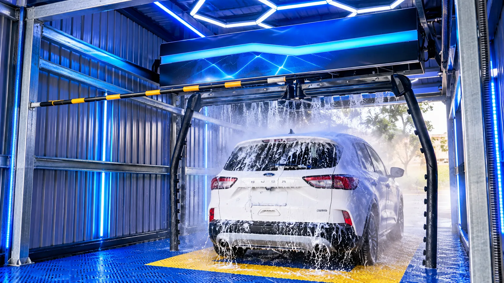
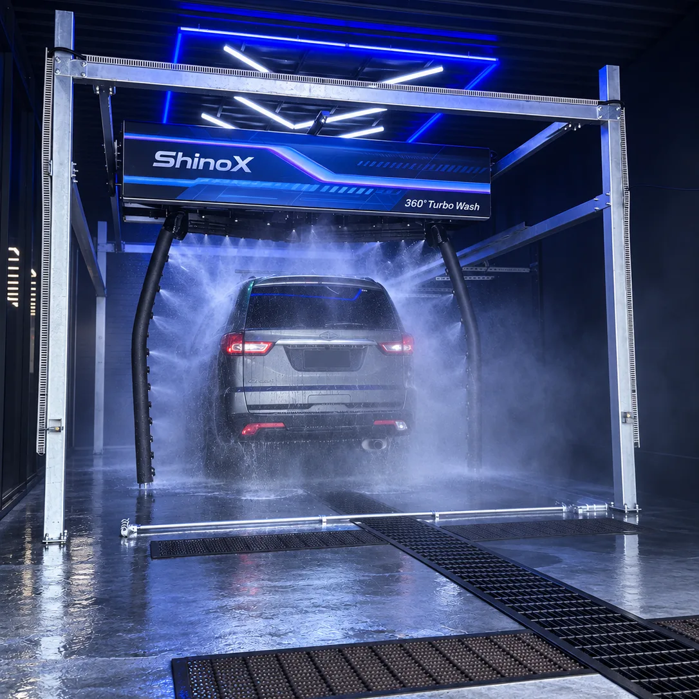
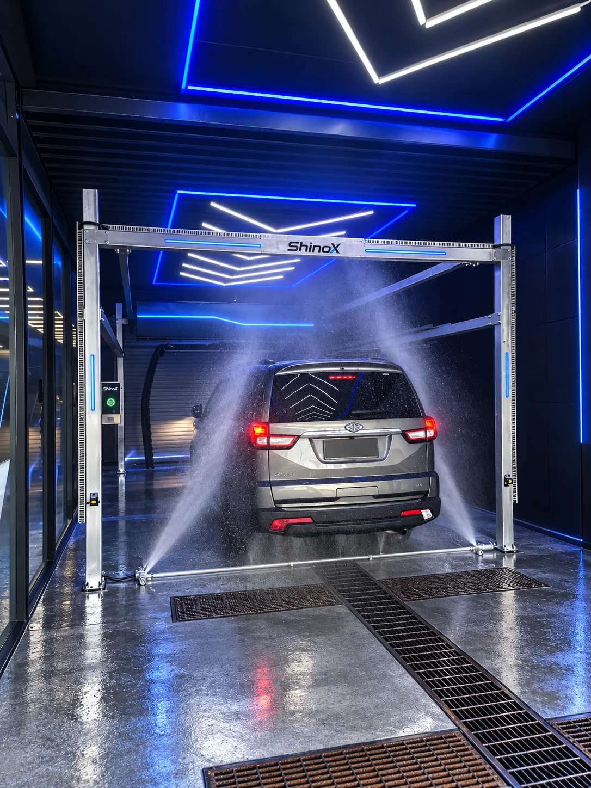
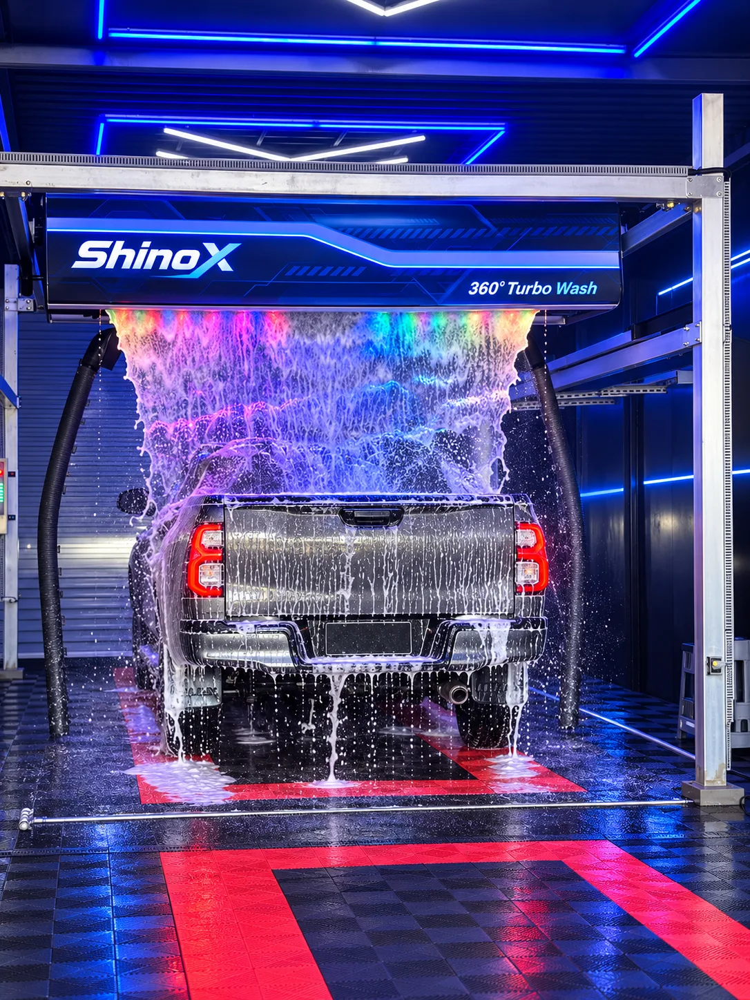
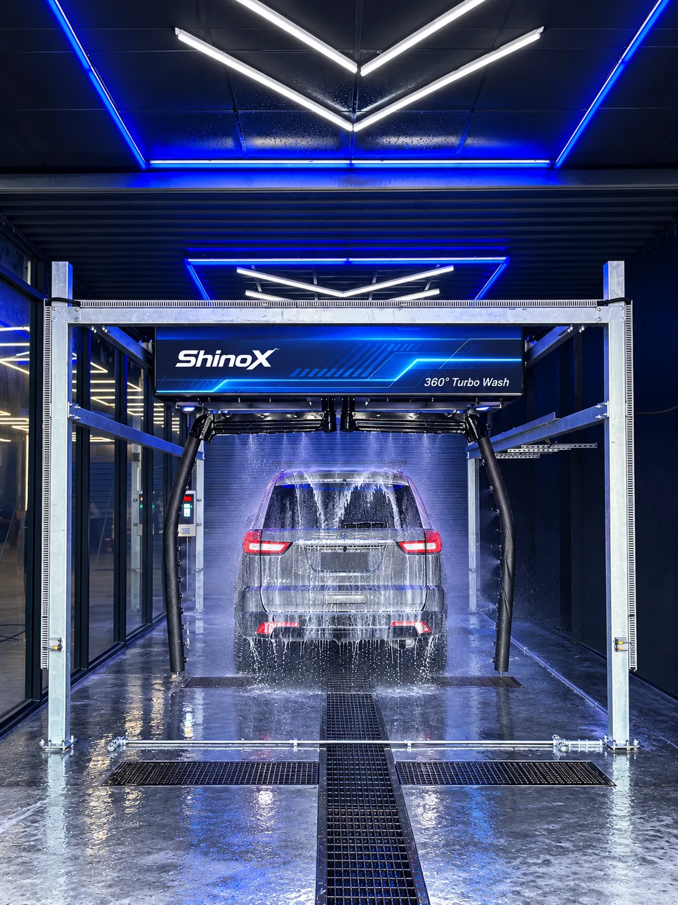

Dual 360° high-pressure arms
Both arms work at once, each covering half a circle; one 360° rotation takes 28 s.
B2 / DUAL-ARM 360° TOUCHLESS
Dual-arm 360° touchless automatic car wash
Two high-pressure arms work at once, so each 360° pass takes only half the travel.
7-in-1 wash functions, about 2 min 30 s and about 100 L of water per car. 15 kW pump motor, 4 × 4 kW blowers, 25 kW total power.

01 / OVERVIEW
ShinoX B2 is a dual-arm 360° touchless automatic car wash. Two 360° rotating high-pressure arms work simultaneously, so each travels only half a circle; one 360° rotation takes 28 s. Only water, foam and air touch the car, and the arms follow its outline at even speed, pressure and distance.
An ultrasonic sensor measures each car and adjusts the wash path and spray angle. Metering pumps dose and atomise the detergent automatically, only 20–50 ml per car. Programmes are fully editable on the touch screen, with fault self-check, voice prompts, safety alarms and pause/resume.
Two arms work at the same time: about 2 min 30 s per car and about 12 cars per hour.
Both arms work at once, each covering half a circle; one 360° rotation takes 28 s.
Only water, foam and air touch the car.
Ultrasonic sensing adjusts the wash path and spray angle.
Fixed floor nozzles blast the chassis, side skirts and wheels at main-wash pressure.
Metering pumps dose and atomise detergent: 20–50 ml per car.
Liquid and compressed air form a thick foam curtain, lit by LEDs.
Crystal coating followed by a nano protective coating in one programme.
4 × 4 kW gantry blowers dry the car top to bottom.
The arms can rinse the nose and tail several times to remove leftover foam and dirt.
Editable programmes on the touch screen, fault self-check, voice prompts, safety alarms, pause/resume.
02 / FUNCTIONS

高壓沖洗
Both arms circle the whole car with the 15 kW pump (up to 25 bar standard).

地噴側噴
Floor nozzles clear mud and grit from the underbody, skirts and wheels.

泡沫瀑布
A curtain of foam covers the whole car, lit by LEDs.

軟化去汙
Detergent softens road film before rinsing.
奈米鍍膜
Protective nano layer that adds shine and water repellency.
晶鑽鍍膜
A crystal-shine coating for a glossy finish.
風乾功能
Four 4 kW gantry blowers dry the body.

03 / WASH PROCESS
Set up to 6 wash modes with up to 12 programme steps; functions are configured to your needs and every programme can be customised. Any step can run twice, for example foam ×2 or drying ×2.
04 / SPECIFICATIONS
| Item | B2 without side blowers | B2 with side blowers |
|---|---|---|
| Drying fans | 4 × 4 kW | 4 × 4 kW + side 2 × 4 kW |
| Side air drying | — | ● |
| Wash arm | Single or dual arm available | |
● included — not included. Single-arm and dual-arm specifications differ; ask us or book a site survey for details. The 28 s rotation, about 2 min 30 s and about 12 cars per hour on this page are dual-arm figures.
| Item | ShinoX B2 Dual-Arm |
|---|---|
| High-pressure pump motor | 15 kW, up to 25 bar standard (optional 18.5 kW, up to 50 bar) |
| Drying fans | 4 × 4 kW gantry (2 × 4 kW side blowers optional) |
| Total power (standard) | 25 kW |
| Power supply | 380 V, 3-phase, 50/60 Hz |
| Travel / rotary / proportioning motors | 0.37 kW each, inverter drive |
| Rated current | 100 A |
| Compressed air | 8 kg/cm² |
| Item | ShinoX B2 Dual-Arm |
|---|---|
| Wash arms (dual arm) | 2 × 360° rotating high-pressure arms, working simultaneously |
| 360° rotation time (dual arm) | 28 s |
| Wash time (dual arm) | About 2 min 30 s per car |
| Throughput (dual arm) | About 12 cars per hour |
| Overall dimensions (H × W × L) | 3.15 × 4.2 × 7.3 m (length includes 0.55 m arm clearance at each end) |
| Track length | 6.2 m |
| Frame height / inner width between arms (dual arm) | 3.0 m / 3.1 m |
| Recommended bay (L × W × H) | 6.2 × 3.6 × 3.0 m, about 24 m² (can be adapted to the site) |
| Power supply | 380 V, 3-phase, 50/60 Hz |
| Total power (standard configuration) | 25 kW |
| High-pressure pump motor | 15 kW, up to 25 bar (standard) |
| Under-chassis wash | Standard, same pressure as main wash (up to 25 bar); up to 50 bar with optional 18.5 kW pump |
| Drying blowers | 4 × 4 kW gantry blowers (without side blowers); 2 × 4 kW side blowers added on the side-blower version |
| Travel / rotary / proportioning motors | 0.37 kW each, inverter drive |
| Rated current | 100 A |
| Compressed air | 8 kg/cm² |
| Water tank | 1–2 t |
| Control | Industrial PLC · 7-inch touch screen · inverter drives |
| Sensing | Ultrasonic length sensor + digital encoder · photoelectric sensors |
| Warranty | 1 year |
05 / CONSUMPTION
| Water | About 100 L per car |
|---|---|
| Electricity | About 0.52 kWh (standard wash) / 0.99 kWh (fine wash) |
| Detergent | 20–50 ml per car |
| Foam shampoo | 10–40 ml per car |
| Crystal coating liquid | 11 L covers about 800 cars |
Figures are reference values per car and vary with the programme, vehicle and site conditions.
06 / STANDARD EQUIPMENT
07 / OPTIONS
18.5 kW, up to 50 bar.
2 × 4 kW side blowers to dry the sides.
Optional; ask us for details.
Voice prompts, balance display and change; payment methods configurable (cards, mobile pay, cash).
Stainless-steel exterior and structural kit.
3-stage filtration plus sterilisation.
Supplies soft water for rinsing.
08 / CONFIGURATION
Single-arm and dual-arm solutions are available on enquiry. Share your bay size and operating needs and our team will recommend a configuration.
Ask on LINE @shinox09 / WARRANTY
The ShinoX B2 Dual-Arm is covered by a 1-year warranty.
10 / VISIT & SURVEY
Book a live demo at one of 3 sites in Tainan, or have our team survey your site free of charge.
Please book a visit first via LINE @shinox or +886 979 666 302.
Contact ShinoX for equipment enquiries in Taiwan and overseas.
shinox.car.washer@gmail.com ↗Email enquiries open your mail application. Please review and send the message there.